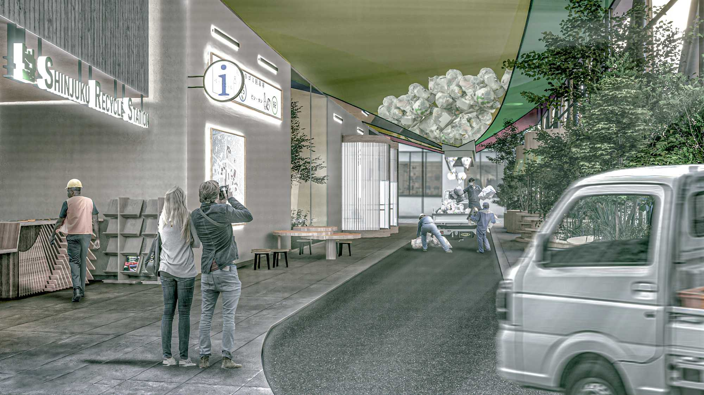
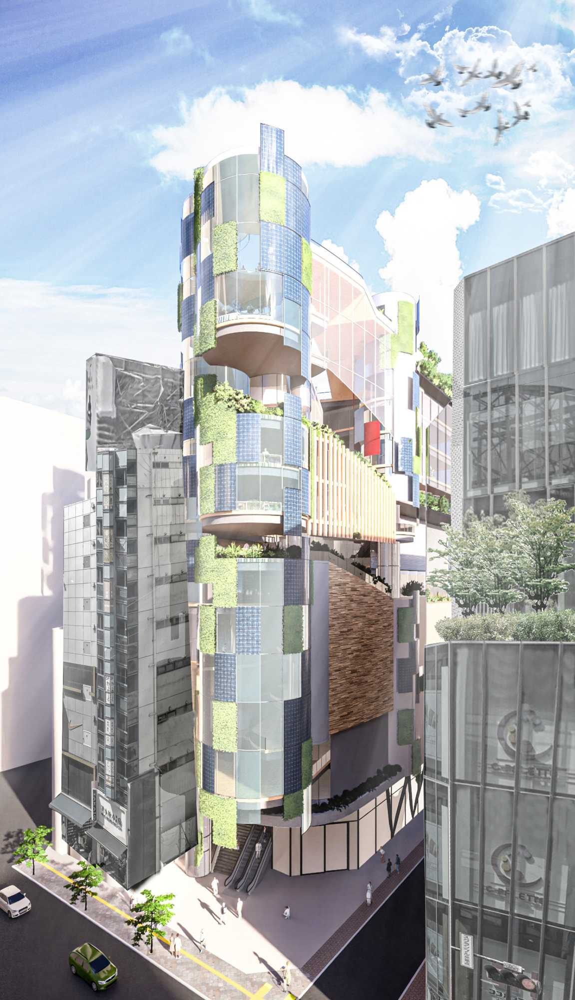
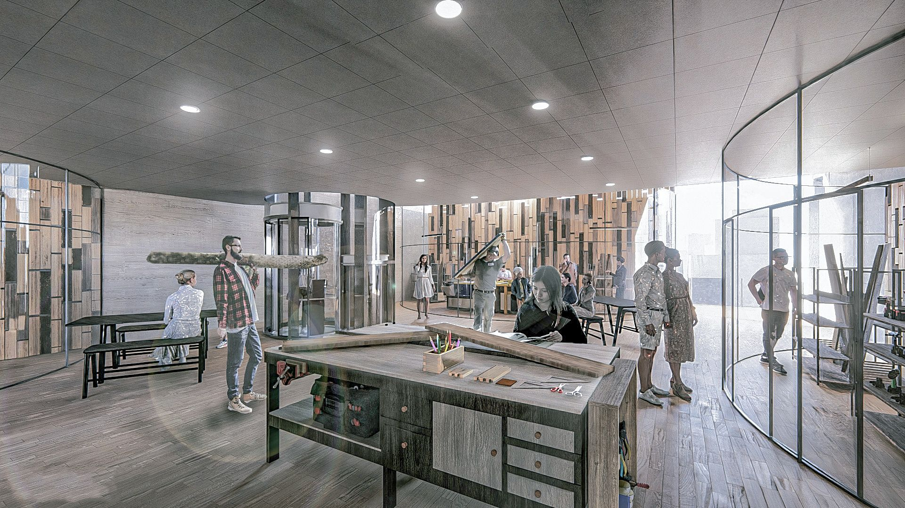
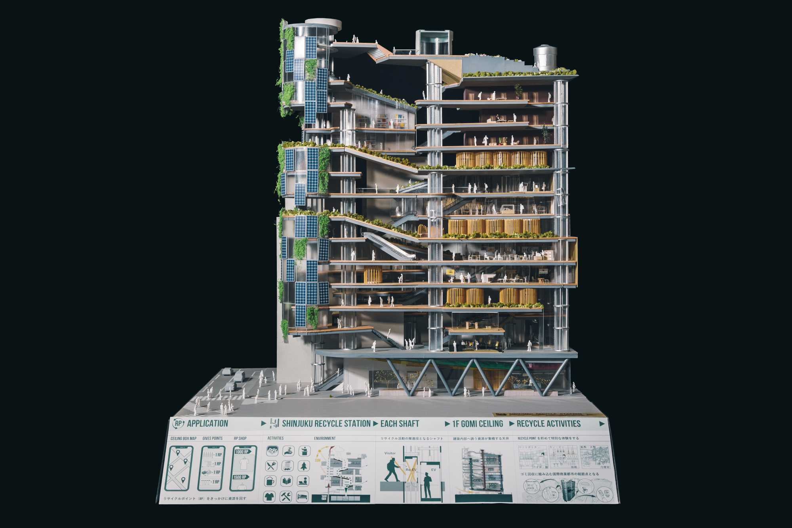
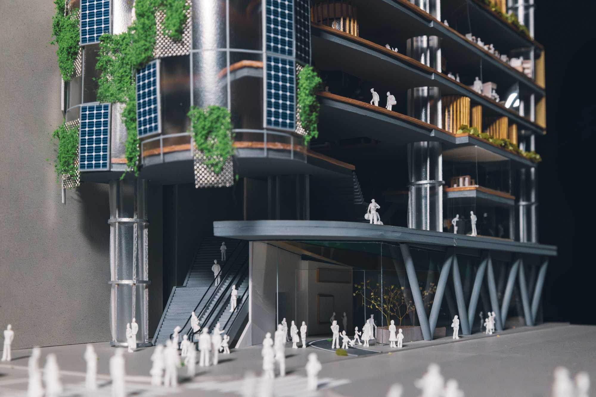
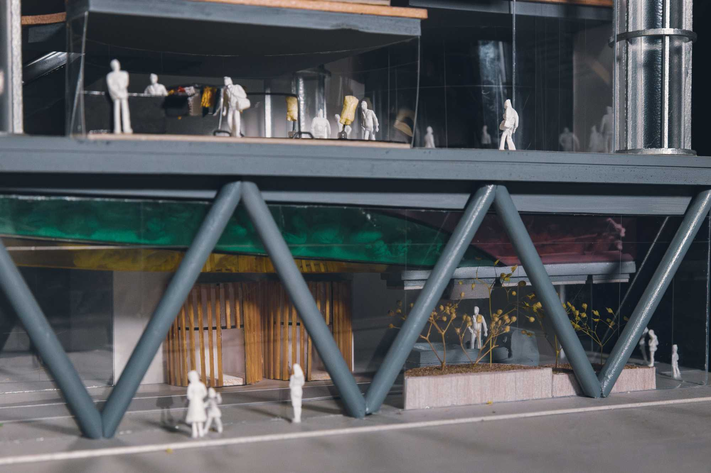

Competition · Design competition
A proposal entered in the 11th Hulic Student Idea Competition by a team of four. The theme was “Izanau Kenchiku” (architecture that invites), and the site was in Shinjuku.
It proposes reusing the waste that comes out of everyday life and turning it into space.





